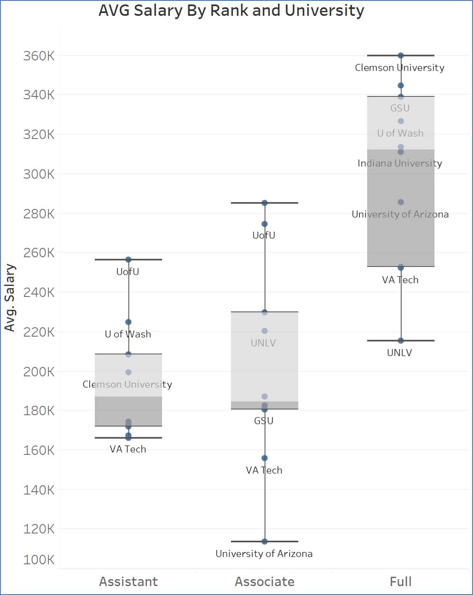

There are typically 5-15 students that enroll each year in courses that are required for the PhD Prep track within the Information Systems program.
The program has 100% placement into top doctoral programs, where students qualify for tuition waivers and stipends ($20,000-$40,000 dependent upon location).
Top universities for Information Systems are shown in the table below (extracted on April 6th, 2021). These universities published the most journal articles in our top six academic journals.
| Rank | University | Normal Count | Adjusted Count | Country |
|---|---|---|---|---|
| 1 | Georgia State University | 65 | 25.83 | USA |
| 2 | City University of Hong Kong | 55 | 22.57 | China |
| 3 | Temple University | 50 | 18.03 | USA |
| 4 | Arizona State University | 45 | 17.86 | USA |
| 5 | University of Minnesota | 44 | 20.75 | USA |
| 5 | University of Texas at Dallas | 44 | 22.78 | USA |
| 7 | University of Arkansas | 42 | 18.94 | USA |
| 8 | Indiana University | 39 | 15.54 | USA |
| 8 | University of Maryland | 39 | 18.58 | USA |
| 10 | University of Arizona | 37 | 15.48 | USA |
| 11 | University of Texas at Austin | 36 | 13.33 | USA |
| 12 | Carnegie Mellon University | 31 | 14.75 | USA |
| 12 | University of Washington | 31 | 10.62 | USA |
| 12 | UNSW Sydney | 31 | 11.35 | Australia |
| 15 | Copenhagen Business School | 30 | 13.87 | Denmark |
| 15 | National University of Singapore | 30 | 12.58 | Singapore |
| 17 | McGill University | 29 | 12.35 | Canada |
| 18 | Hong Kong University of Science and Technology | 27 | 14.15 | China |
| 19 | University of Florida | 25 | 10.8 | USA |
| 19 | University of Virginia | 25 | 9.78 | USA |
| 21 | Bentley University | 24 | 10.79 | USA |
| 22 | New York University | 22 | 10.07 | USA |
| 22 | University of Connecticut | 22 | 8.3 | USA |
| 22 | Virginia Polytechnic Institute and State University | 22 | 9.37 | USA |
| 25 | University of Georgia | 21 | 7.9 | USA |
| 25 | University of South Florida | 21 | 8.55 | USA |
| 27 | Brigham Young University | 19 | 8.77 | USA |
| 27 | University of British Columbia | 19 | 8.42 | Canada |
| 29 | Tsinghua University | 18 | 7.2 | China |
| 29 | University of Jyvaskyla | 18 | 10.08 | Finland |
| 29 | University of Notre Dame | 18 | 8.15 | USA |
| 29 | Washington State University | 18 | 5.85 | USA |
| 33 | ESSEC Business School | 17 | 7.04 | France |
| 33 | Georgia Institute of Technology | 17 | 7.53 | USA |
| 33 | Nanjing University | 17 | 7.15 | China |
| 36 | University of Texas at Arlington | 16 | 5.08 | USA |
| 37 | Fudan University | 15 | 5.08 | China |
| 37 | George Washington University | 15 | 4.78 | USA |
| 37 | Singapore Management University | 15 | 6.2 | Singapore |
| 37 | Stevens Institute of Technology | 15 | 7.03 | USA |
| 37 | University of Hong Kong | 15 | 5.12 | China |
| 37 | University of St Gallen | 15 | 6.89 | Switzerland |
| 37 | University of Warwick | 15 | 5.78 | UK |
| 44 | Michigan State University | 14 | 6.08 | USA |
| 44 | University of Cincinnati | 14 | 5.77 | USA |
| 44 | University of Wisconsin-Madison | 14 | 4.75 | USA |
| 47 | HEC Montreal | 13 | 6.23 | Canada |
| 47 | University of California at Irvine | 13 | 5.2 | USA |
| 47 | University of Delaware | 13 | 4.12 | USA |
| 47 | University of Houston | 13 | 4.53 | USA |
| 47 | University of Oklahoma | 13 | 3.93 | USA |
Those listed above are not the only good schools to choose from, but individuals looking to get a PhD in Information Systems should know that these are some of their best options. Another way to search is by individual professor.
Below is a similar table of the top publishing professors worldwide based on our top six journals.
| Rank | Author Name | Normal Count | Adjusted Count | Weighted Count | Straight Count |
|---|---|---|---|---|---|
| 1 | Viswanath Venkatesh | 21 | 6.21 | 8.7 | 12 |
| 2 | Paul Lowry | 19 | 5.75 | 7.9 | 4 |
| 3 | Liangfei Qiu | 16 | 5.03 | 7.2 | 4 |
| 3 | Yong Tan | 16 | 5.08 | 7 | 0 |
| 5 | Alan Dennis | 15 | 5.53 | 7.9 | 2 |
| 5 | Lars Mathiassen | 15 | 5.25 | 7.5 | 0 |
| 7 | Jason Thatcher | 14 | 3.73 | 5 | 1 |
| 8 | Sunil Mithas | 13 | 4.42 | 6.5 | 3 |
| 8 | Alain Pinsonneault | 13 | 4.37 | 6.1 | 1 |
| 10 | Yili Hong | 12 | 3.65 | 5.2 | 4 |
| 10 | Kalle Lyytinen | 12 | 4.08 | 5.6 | 2 |
| 10 | Paul Pavlou | 12 | 4.17 | 6 | 0 |
| 10 | Arun Rai | 12 | 3.83 | 5.4 | 0 |
| 14 | Alok Gupta | 11 | 3.08 | 4.1 | 1 |
| 14 | Mark Keil | 11 | 3.5 | 4.9 | 1 |
| 14 | Subodha Kumar | 11 | 3.67 | 5.3 | 1 |
| 14 | Vijay Mookerjee | 11 | 3.25 | 4.5 | 0 |
| 14 | Andrew Whinston | 11 | 3.17 | 4.7 | 0 |
| 19 | Izak Benbasat | 10 | 3.58 | 5.2 | 0 |
| 19 | Shan Pan | 10 | 2.92 | 3.8 | 1 |
| 21 | Gordon Burtch | 9 | 3.08 | 4.3 | 3 |
| 21 | Hsinchun Chen | 9 | 2.45 | 3.5 | 0 |
| 21 | Anindya Ghose | 9 | 3 | 4.3 | 2 |
| 21 | Anandasivam Gopal | 9 | 3.08 | 4.5 | 1 |
| 21 | Jay Nunamaker | 9 | 2.32 | 3.1 | 1 |
| 21 | Wonseok Oh | 9 | 2.37 | 3.1 | 1 |
| 27 | Gediminas Adomavicius | 8 | 2.33 | 3.2 | 3 |
| 27 | Varun Grover | 8 | 2.92 | 4 | 1 |
| 27 | Jeffrey Jenkins | 8 | 1.65 | 2.4 | 2 |
| 27 | Suprateek Sarker | 8 | 2.28 | 3.2 | 1 |
| 27 | Merrill Warkentin | 8 | 2.5 | 3.4 | 2 |
| 27 | Zhiqiang Zheng | 8 | 2.33 | 3.2 | 0 |
| 33 | Ravi Bapna | 7 | 2 | 2.7 | 4 |
| 33 | Hsing Cheng | 7 | 1.9 | 2.7 | 2 |
| 33 | Likoebe Maruping | 7 | 2.33 | 3.3 | 3 |
| 33 | Gregory Moody | 7 | 2.03 | 3.1 | 4 |
| 33 | Barrie Nault | 7 | 2.5 | 3.5 | 1 |
| 33 | Srinivasan Raghunathan | 7 | 2.5 | 3.7 | 1 |
| 33 | Jan Recker | 7 | 2.18 | 3.1 | 2 |
| 33 | Rajiv Sabherwal | 7 | 2.25 | 3.1 | 1 |
| 33 | Mikko Siponen | 7 | 2.42 | 3.3 | 2 |
| 33 | Tracy Ann Sykes | 7 | 3.03 | 3.8 | 2 |
| 33 | Monideepa Tarafdar | 7 | 2.28 | 3.1 | 4 |
| 33 | James Thong | 7 | 1.9 | 2.7 | 0 |
| 33 | Jan vom Brocke | 7 | 1.63 | 2.3 | 1 |
| 46 | Alexander Benlian | 6 | 2.58 | 3.3 | 2 |
| 46 | Susan Brown | 6 | 2.08 | 3 | 2 |
| 46 | Andrew Burton-Jones | 6 | 1.84 | 2.8 | 3 |
| 46 | Jianqing Chen | 6 | 2.17 | 3.2 | 1 |
| 46 | Alec Cram | 6 | 2.03 | 3 | 5 |
| 46 | Yulin Fang | 6 | 1.62 | 2.2 | 1 |
| 46 | James Gaskin | 6 | 1.53 | 2 | 2 |
| 46 | Bin Gu | 6 | 1.92 | 2.6 | 0 |
| 46 | Xitong Guo | 6 | 1.78 | 2.4 | 0 |
| 46 | Il-Horn Hann | 6 | 2.17 | 3.2 | 1 |
| 46 | Yi-Chun Ho | 6 | 1.7 | 2.4 | 2 |
| 46 | Kai-Lung Hui | 6 | 2.08 | 3 | 2 |
| 46 | Sung Kim | 6 | 1.83 | 2.6 | 0 |
| 46 | Atanu Lahiri | 6 | 2.17 | 3 | 1 |
| 46 | Beibei Li | 6 | 1.83 | 2.6 | 0 |
| 46 | De Liu | 6 | 2 | 3 | 1 |
| 46 | T S Raghu | 6 | 2 | 2.8 | 0 |
| 46 | Balasubramaniam Ramesh | 6 | 1.6 | 2.4 | 1 |
| 46 | Raghav Rao | 6 | 1.75 | 2.4 | 0 |
| 46 | Huaxia Rui | 6 | 2 | 3 | 0 |
| 46 | Carol Saunders | 6 | 1.53 | 2 | 1 |
| 46 | Detmar Straub | 6 | 1.83 | 2.6 | 0 |
| 46 | Martin Wiener | 6 | 1.62 | 2.2 | 2 |
| 46 | Ryan Wright | 6 | 1.57 | 2.2 | 1 |
For Information Systems professors at top tier business schools the starting salary is currently (2021) around $120,000-$220,000 with an approximate 2x lifetime increase (dependent upon location). Moving often increases salary. Usually, professors are paid on 8-10 month contracts which can be annualized over a 12-month schedule. Salaries vary greatly by location and institution. However, a 2019 survey of assistant, associate, and full professors at public universities roughly on par with BYU (in terms of prestige) is visualized below. In general, private universities tend to pay slightly more, but their salaries are not publicly disclosed.
The current job outlook for BYU PhD Prep students that go on to finish with a PhD in Information Systems is fabulous. At this time there are approximately 3 good jobs for every qualified candidate.